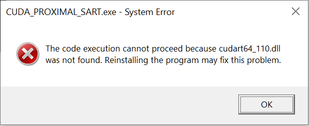

Framework Binaries for Windows
Description
Compiled binaries for Windows. Requires CUDA device with compute capabilities > 6.0. Tested using Windows 10 x64 with CUDA toolkit 11.3. You can download and test the binaries using the tilt-series 'b2tilt40.mrc' from the EMPIAR-10643 dataset (linked below, bin-3 alignment is recommended) or the SARS-CoV-2 D614 strain aligned tilt-series from the 'Progress over time' subsection.
Source
- Binary file
- Parameter description
- EMPIAR-10643 (HIV) dataset
- SARS-CoV-2 D614 strain aligned tilt-series
Error - CUDA not installed
The following error is produced if the binary is executed on a machine without the CUDA toolkit:
Error produced if CUDA Toolkit is not installed.